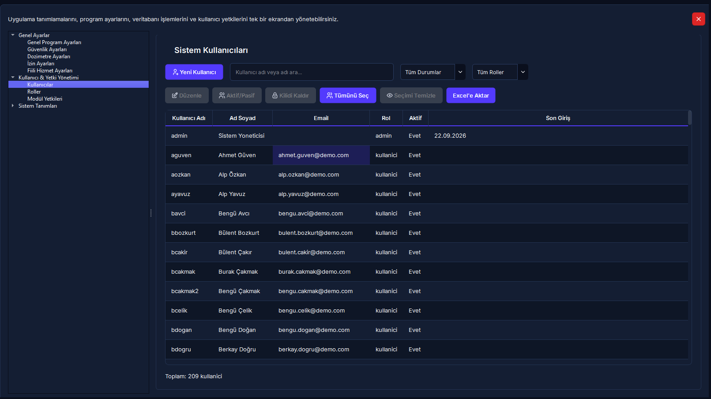
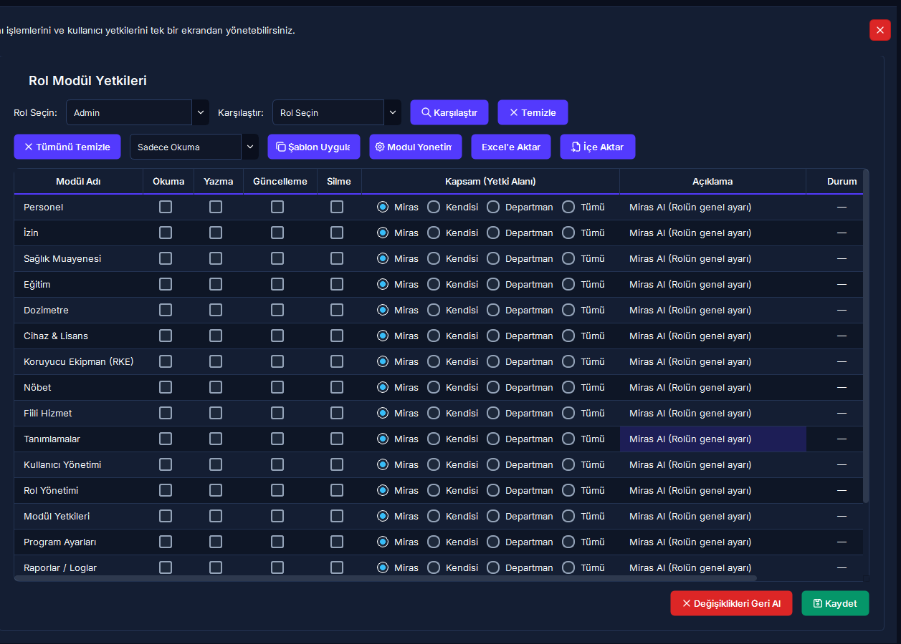

Kullanıcı ve Rol Yönetimi
Rol Tabanlı Erişim Kontrolü (RBAC), modül düzeyinde 4 kademeli yetki ve veri kapsamı matrisi (Miras, Kendisi, Departman, Tümü), hatalı şifreyle kilitlenen personelin hesap kilidini kaldırma ve güvenli rol klonlama işlemlerini yönetmenizi sağlar.
Kısa Reçete (20 Saniye Kuralı)
Yapılacak İşlem: [Kullanıcı İşlemleri] sekmesinden [Yeni Kullanıcı] butonuna tıklayın; kullanıcı adı, e-posta, kurumdaki görevine uygun rolü ve sağlık personeli ise [Personel Bağlantısı]'nı seçerek en az 8 karakterli geçici şifresini kaydedin. Birim amirlerini ve saha görevlerini (RKE muayene, cihaz bakım, ortam dozu, dozimetre, eğitim) atamak için [Birim Sorumlulukları] sekmesinden ilgili departmanı seçip [Sorumluyu Değiştir] veya [Görev Ata] butonunu kullanın.
Sistem Güvencesi: Personelin nöbet, izin ve dozimetre takipleri doğrudan özlük kartıyla entegre olur; her departmanın yalnızca bir asli Departman Sorumlusu bulunur ve saha iş yükünü paylaşmak üzere seçilen personellere görev tahsisi (delegasyon) yapılabilir.
Kritik Sahada Yanlış Bilinen Kurallar (Mit Avcısı)
5N1K Kural ve Ayar Çözümleme Tablosu
Kullanıcı yönetimi, sistem rolleri ve yetki matrisindeki tüm kontrollerin operasyonel kuralları.
Rol Tabanlı Yetki ve Kapsam Mantığı (Mermaid)
Aşağıdaki şema, bir personelin sisteme girişinden itibaren rol yetkilerinin ve 4 kademeli veri kapsamının arka planda nasıl çözümlendiğini göstermektedir.
Tüm Modüller Açık"] B -->|"Standart Rol"| D["Modül Yetki Matrisi Kontrolü"] D --> E{"Okuma Yetkisi Var mı?"} E -->|Hayır| F["Modül / Sekme Gizlenir"] E -->|Evet| G["Modül Kullanıma Açılır"] G --> H{"Yazma / Silme İzni?"} H -->|Var| I["Kayıt Ekle / Güncelle / Pasife Al"] H -->|Yok| J["Sadece İnceleme Kipi"] G --> K{"Modül Kapsamı Nedir?"} K -->|Miras| L["Rolün Genel Kapsamını Uygula"] K -->|Kendisi| M["Sadece Kendi Sicil Kayıtları"] K -->|Departman| N["Kendi Birimindeki Tüm Kayıtlar"] K -->|Tümü| O["Tüm Kurum Verilerini Görme"]
Ekran Konumları ve Görsel Rehber


Adım Adım Operasyonel Eylem Akışı
Sıkça Sorulan Sorular ve Takılma Yönetimi
Personel kartına bağlamadığım bir kullanıcı nöbet yazabilir veya nöbet listesinde görünebilir mi?
Personel kurumdan ayrıldığında kullanıcı kaydını tamamen silebilir miyim?
RADPYS'de fiziksel veri silme işlemi bulunmaz. Kullanıcıyı listeden seçip [Pasif Yap] butonuna bastığınızda hesabın sisteme girişi derhal kesilir. Ancak kullanıcının geçmişte onayladığı nöbetler ve kaydettiği işlemler denetim izinde bozulmadan korunur.
Bir role Yazma yetkisi vermek istediğimde neden Okuma yetkisi otomatik olarak işaretleniyor?
RADPYS Yetki Bağımlılık Motoru gereğince bir modülü görüntüleme (Okuma) yetkisi olmayan bir personelin o modülde yeni kayıt oluşturması veya düzenleme yapması mantıksal olarak imkansızdır. Bu nedenle Yazma, Güncelleme veya Silme kutularından biri açıldığında Okuma yetkisi otomatik olarak kilitli şekilde açılır.
"Miras" kapsamı seçildiğinde personelin yetki alanı neye göre belirlenir?
Modül yetki tablosundaki Miras seçeneği, ilgili modülün rolün genel ayarlarında tanımlanmış olan veri sınırını (Kendisi, Kendi Departmanı veya Tümü) doğrudan uygulamasını sağlar. Eğer belirli bir modül için farklı bir kural uygulamak isterseniz satırdaki radyo butonunu doğrudan [Kendisi], [Departman] veya [Tümü] olarak değiştirebilirsiniz.